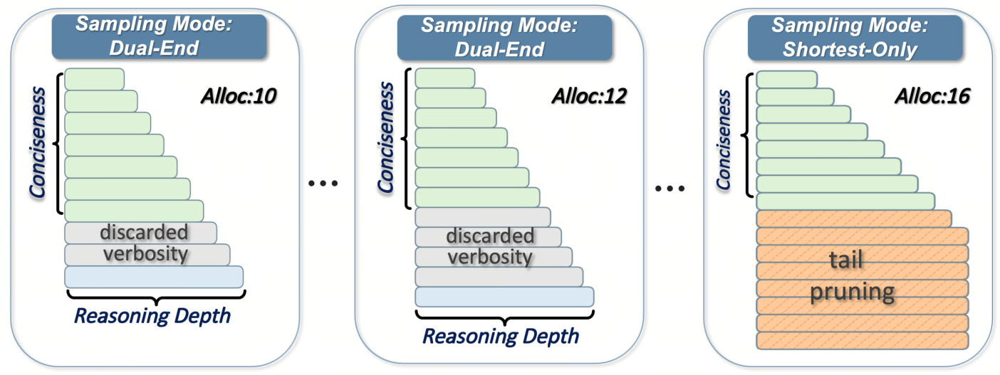

DARTS: Distribution-Aware Active Rollout Trajectory Shaping for Accelerating LLM Reinforcement Learning
ICML 2026
Distribution-aware trajectory sampling, adaptive redundancy allocation, and token-level streaming for up to 1.77× faster LLM reinforcement learning.